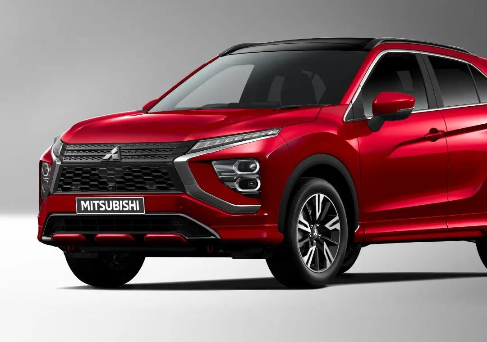

Интерьер
Каждая деталь Eclipse Cross создана для комфорта и удобной связи с цифровым миром.

ГОРИЗОНТАЛЬНАЯ АРХИТЕКТУРА
Всё подчинено водителю
Горизонтальная архитектура панели позволяет управлять функциями с минимумом движений, уделяя больше внимания дороге.
СИДЕНЬЕ ВОДИТЕЛЯ С РАЗВИТОЙ ПОДДЕРЖКОЙ
Комфорт в любой поездке
Сиденье водителя поддерживает плечи и бёдра, а мягкая центральная часть помогает пояснице. Продуманная форма сохраняет комфорт и в коротких, и в дальних поездках.

ЧЁРНАЯ КОЖАНАЯ ОТДЕЛКА
Придайте салону индивидуальность
Добавьте салону элегантности: для Eclipse Cross предусмотрена отделка чёрной кожей.


8-ДЮЙМОВАЯ МУЛЬТИМЕДИЙНАЯ СИСТЕМА С ПОДКЛЮЧЕНИЕМ СМАРТФОНА
На связи даже в дороге
Мультимедийная система Smartphone Link Display Audio (SDA) обеспечивает удобное подключение смартфона.
Android Auto™Подключите Android-смартфон к SDA и управляйте приложениями голосом, уделяя больше внимания дороге.
Apple CarPlay
Подключите iPhone к SDA, чтобы через Siri пользоваться картами, музыкой, звонками и сообщениями, в том числе в дороге.
ОБОГРЕВ ПЕРЕДНИХ И ЗАДНИХ СИДЕНИЙ
Комфорт в холодную погоду
Обогрев передних и задних сидений помогает сохранять комфорт независимо от температуры за окном.


ГИБКАЯ ТРАНСФОРМАЦИЯ САЛОНА
Девять положений наклона задних сидений
В Eclipse Cross достаточно места для пяти взрослых. Задние сиденья имеют девять положений наклона и продольную регулировку для дополнительного пространства ног.

ПРОСТОРНЫЙ БАГАЖНИК
Багажник объёмом 331 литр
Багажник увеличен на 10% по сравнению с предыдущим Eclipse Cross: при поднятых задних сиденьях можно разместить три сумки для гольфа диаметром 9,5 дюйма или четыре чемодана.
СТИЛЬНЫЕ ДЕТАЛИ ИНТЕРЬЕРА
Практичные решения в салоне
В салоне продуманы полезные детали: держатели бутылок в дверях, два подстаканника в центральной консоли, USB-разъём для зарядки и отделение для телефона.